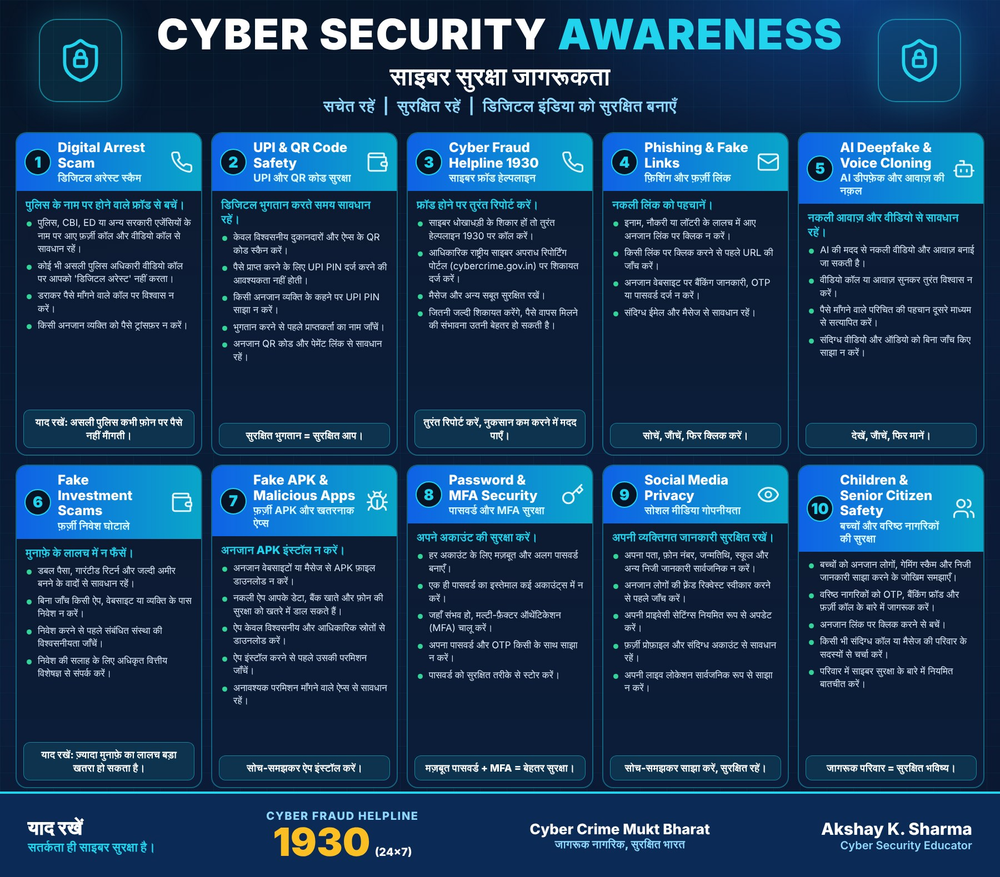
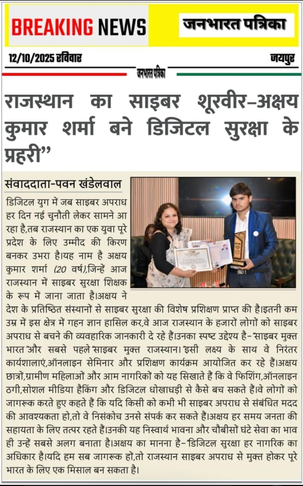

Blog & Articles
Articles on cybersecurity, digital safety and fraud prevention in English and Hindi.
Cybersecurity Is More Than Just a Strong Passwordसाइबर सुरक्षा सिर्फ़ मज़बूत पासवर्ड नहीं है
A strong password helps, but real account safety comes from several habits working together.मज़बूत पासवर्ड मदद करता है, पर अकाउंट की असली सुरक्षा कई आदतों के मेल से बनती है।
Read articleHow to Recognize Common UPI Scamsआम UPI ठगियों को कैसे पहचानें
Fake collect requests, QR code tricks and 'refund' calls: the patterns behind common UPI fraud.नकली कलेक्ट रिक्वेस्ट, QR कोड की चालें और 'रिफ़ंड' कॉल: UPI ठगी के पीछे के पैटर्न।
Read articleUnderstanding Social Engineeringसोशल इंजीनियरिंग को समझें
Why attackers target people instead of computers, and how to notice when you are being manipulated.हमलावर कंप्यूटर की जगह इंसान को निशाना क्यों बनाते हैं, और हेरफेर को कैसे पहचानें।
Read articleProtecting Your Digital Footprintअपने डिजिटल फ़ुटप्रिंट की सुरक्षा
Small pieces of information add up. Here is how to share less and stay in control.छोटी-छोटी जानकारियाँ मिलकर बड़ी तस्वीर बनाती हैं। कम साझा करें और नियंत्रण में रहें।
Read articlePhishing Emails: Warning Signs Everyone Should Knowफ़िशिंग ईमेल: हर किसी को पता होने चाहिए ये संकेत
A short checklist for spotting suspicious emails before you click.क्लिक करने से पहले संदिग्ध ईमेल पहचानने की एक छोटी चेकलिस्ट।
Read articleAI-Based Scams and Digital SafetyAI आधारित ठगी और डिजिटल सुरक्षा
Voice clones and deepfakes are new tools for an old trick. Simple verification still works.आवाज़ की नकल और डीपफ़ेक नए औज़ार हैं, तरीका पुराना है। सरल सत्यापन अब भी काम करता है।
Read articleCyber Safety Tips for Studentsविद्यार्थियों के लिए साइबर सुरक्षा सुझाव
Practical habits for students: accounts, scams, social media and asking for help.विद्यार्थियों के लिए व्यावहारिक आदतें: अकाउंट, ठगी, सोशल मीडिया और मदद माँगना।
Read articleWhat to Do After an Online Financial Fraudऑनलाइन आर्थिक ठगी के बाद क्या करें
The first steps to take in the first hours after losing money online.ऑनलाइन पैसे गँवाने के बाद शुरुआती घंटों में उठाए जाने वाले पहले कदम।
Read articleNo matching articles
Try a different search term or category.
Cyber Security Awareness: 10 things to rememberसाइबर सुरक्षा जागरूकता: याद रखने योग्य 10 बातें


Press & Media
A press release about Akshay Kumar Sharma's cyber awareness work has been published on the sites below. These are press-release (PR) articles, not independent editorial coverage.अक्षय कुमार शर्मा के साइबर जागरूकता कार्य पर एक प्रेस विज्ञप्ति नीचे दी गई साइटों पर प्रकाशित हुई है। ये प्रेस विज्ञप्ति (PR) लेख हैं, स्वतंत्र संपादकीय कवरेज नहीं।

Singapore Review Magazine
singaporereviewmagazine.com
Read press releaseप्रेस विज्ञप्ति पढ़ें (opens in a new tab)Euro Health Leaders Magazine
eurohealthleadersmag.com
Read press releaseप्रेस विज्ञप्ति पढ़ें (opens in a new tab)Industry World Mag
industryworldmag.com
Read press releaseप्रेस विज्ञप्ति पढ़ें (opens in a new tab)Women Leaders Magazine
womenleadersmagazine.com
Read press releaseप्रेस विज्ञप्ति पढ़ें (opens in a new tab)Middle East Leaders Magazine
middleeastleadersmagazine.com
Read press releaseप्रेस विज्ञप्ति पढ़ें (opens in a new tab)Education Leaders Magazine
educationleadersmagazine.com
Read press releaseप्रेस विज्ञप्ति पढ़ें (opens in a new tab)Dubai Leaders Magazine
dubaileadersmagazine.com
Read press releaseप्रेस विज्ञप्ति पढ़ें (opens in a new tab)Silicon Leaders Magazine
siliconleadersmagazine.com
Read press releaseप्रेस विज्ञप्ति पढ़ें (opens in a new tab)CIO Leaders Magazine
cioleadersmagazine.com
Read press releaseप्रेस विज्ञप्ति पढ़ें (opens in a new tab)CIO Look Magazine
ciolookmagazine.com
Read press releaseप्रेस विज्ञप्ति पढ़ें (opens in a new tab)Enterprise Review Media
enterprisereviewmedia.com
Read press releaseप्रेस विज्ञप्ति पढ़ें (opens in a new tab)Insights Care Magazine
insightscaremagazine.com
Read press releaseप्रेस विज्ञप्ति पढ़ें (opens in a new tab)Insights Success India
insightssuccessindia.com
Read press releaseप्रेस विज्ञप्ति पढ़ें (opens in a new tab)Education View Magazine
educationviewmagazine.com
Read press releaseप्रेस विज्ञप्ति पढ़ें (opens in a new tab)Businessman Mag
businessmanmag.in
Read press releaseप्रेस विज्ञप्ति पढ़ें (opens in a new tab)Education View Magazine (Google share link)
share.google
Read press releaseप्रेस विज्ञप्ति पढ़ें (opens in a new tab)Akshay Kumar Sharma: Empowering Cybersecurity Awareness 2026
share.google
Read press releaseप्रेस विज्ञप्ति पढ़ें (opens in a new tab)Akshay Kumar Sharma: 2026 Powerful Cybersecurity Educator
share.google
Read press releaseप्रेस विज्ञप्ति पढ़ें (opens in a new tab)